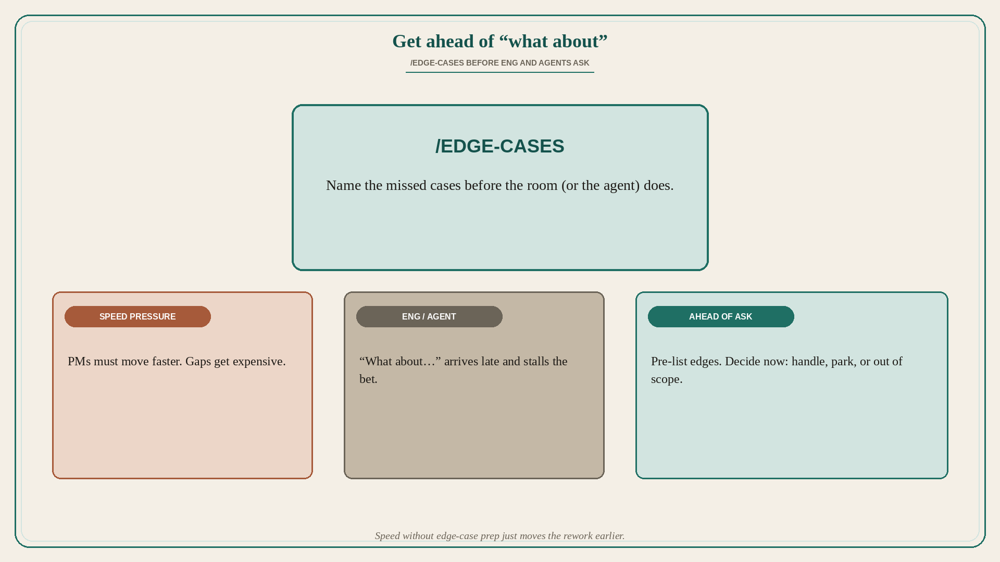

Get ahead of “what about” with edge cases
Source: George / prodmgmt.world (@nurijanian)
original post
What it claims
Now that PMs are supposed to move faster, you need skills to get ahead of all the “what about” from eng and from agents. Practice /edge-cases: surface missed cases before the room (or the model) stalls you with them.
Why it matters for a PO
Speed without edge-case prep just moves rework earlier. Engineers and AI assistants are excellent at finding the path you skipped — mid-refinement or mid-prompt. A PO who pre-lists edges (permissions, empty states, concurrency, legacy data, failure modes) can decide handle / park / out of scope before the Sprint commitment, instead of burning cycles on surprise questions that feel like blockers.
3 takeaways
- Faster PM work needs earlier edge-case hygiene, not thinner specs.
- “What about…” from eng or agents is predictable — pre-answer or explicitly defer.
- /edge-cases is a skill: list, triage, write decisions into acceptance criteria.
Practice this week
For one upcoming backlog item, write ten “what about” questions yourself before refinement (roles, empty/full states, retries, partial failure, data migration). Mark each Handle this Sprint / Park with owner / Out of scope. Bring the list to refinement so eng “what about” lands on decisions already made.